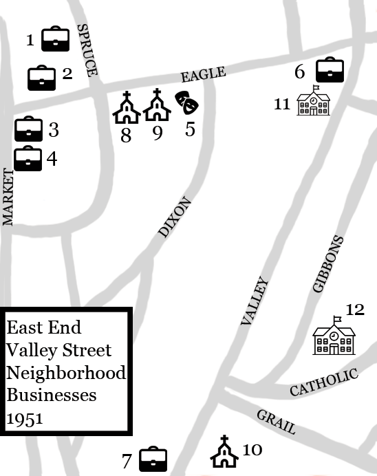
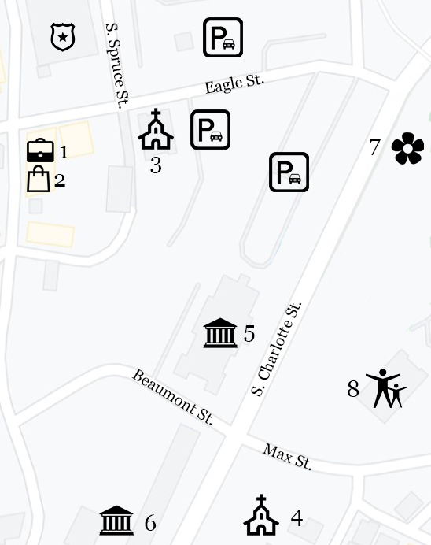

The Box Legend
Asheville 1951

- 1:Roland's Jelwery
- 2:Savoy Hotel and Cafe
- 3:Market Street Library (Located Within the YMI)
- 4:YMI Cultural Center (Soda Shop and Drugstore Located Within)
- 5:Eagle Street Theatre
- 6:James Macon Barber Shop
- 7:Self-Serve Laundromat
- 8:Sycamore Temple Church of God in Christ
- 9:Mt. Zion Missionary Baptist Church
- 10:St. Matthias Episcopal Church
- 11:Southeastern Business School
- 12:Stephens-Lee High School
Asheville 2021

- 1:YMI Cultural Center
- 2:Noir Collective
- 3:Mount Zion Community Development
- 4: St Matthias' Episcopal Church
- 5:Asheville Public Works & Development Services Department
- 6: Asheville Garbage
- 7:Bountiful Cities Edible Garden
- 8:Stephens-Lee Recreation Center